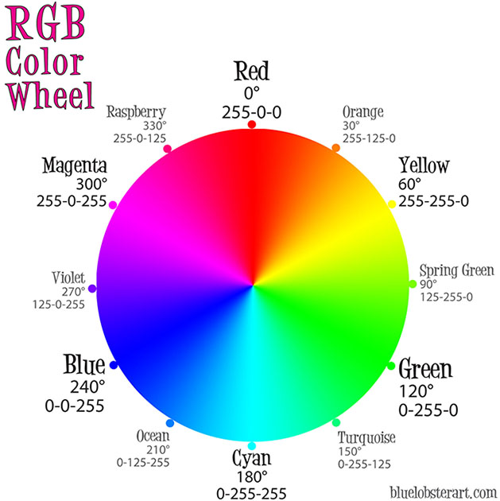
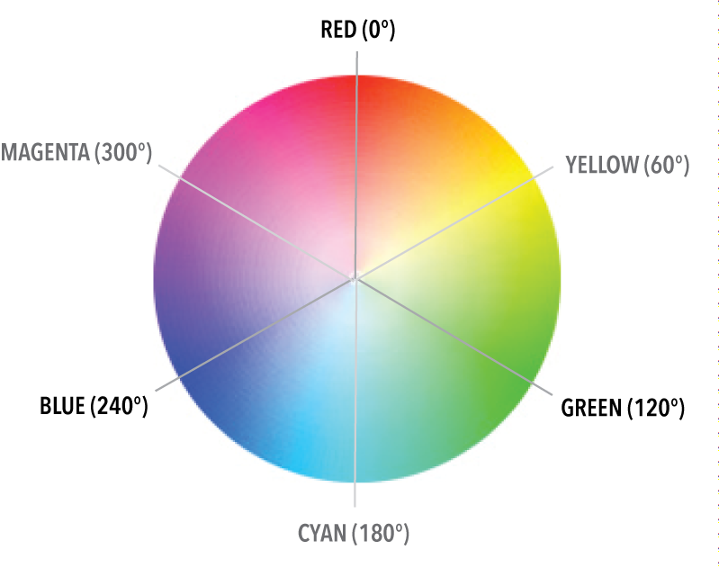

CSS3新增了RGBA、HSLA模式，其中的A 表示透明度通道，即可以设置颜色值的透明度，相较opacity，不具有继承性，即不会影响子元素的透明度。
- RGBA方式三原色配色方式(Red、Green、Blue、Alpha)
- 在RGB模式上新增了Alpha透明度。
- R、G、B 取值范围0~255

- HSL模式
- 语法:HSL(H,S,L)，HSL分别表示色调，饱和度，亮度
- H:0(或360)表示红色，120表示绿色，240表示蓝色，也可取其他数值来指定颜色。取值为：0 - 360
- S:(饱和度)。取值为：0.0% - 100.0%
- L:(亮度)。取值为：0.0% - 100.0%

- HSLA模式(Hue、Saturation、Lightness、Alpha)
- 关于透明度：
- opacity子元素会继承父元素的透明度，在实际开发中会带来干扰；
- transparent 设置透明度时完全类似于“玻璃”一样的透明；